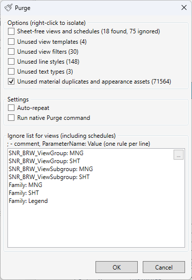

Purge - Project Cleanup
Table of contents
The Purge tool is designed to clean up a project from unused elements in addition to the built-in Purge Unused command.
What can be removed?
The tool allows you to selectively remove the following types of elements:
- Sheet-free Views and Schedules: Removes views and schedules that are not placed on any project sheet.
- Unused View Templates: Removes view templates that are not applied to any view.
- Unused View Filters: Removes filters that are not used in view graphic overrides.
- Unused Line Styles: Removes line styles that are not used in the project.
- Unused Text Styles: Removes text styles that are not used in any text notes or schedules.
- Material Duplicates: Finds and removes duplicate materials and appearance assets among unused elements. (Available only in Revit 2024 and newer)
Additional Features
- Customizable Ignore List: You can specify which views or schedules should be ignored during cleanup to prevent them from being deleted. The ignore list can be automatically generated based on the project browser organization.
- Auto-repeat: The tool can perform multiple cleanup passes to ensure maximum results, as deleting some elements may make others unused.
- Run Native Revit Purge: The tool can also run the built-in Revit command to purge unused elements.
- Work Report: After cleanup is complete, a text report is generated with a list of all deleted elements.

Usage
- Run the “Purge” command in Revit.
- In the opened window, select the element categories you want to remove by checking the corresponding checkboxes.
- Tip: Right-click on a checkbox to quickly select only that category (all others will be deselected).
- If necessary, specify an ignore list in the text box. You can generate a default list.
- Click the “Run” button to start the cleanup process.
- For operations with a large number of elements (more than 1000), a progress bar with cancellation option will be displayed.
- Review the work report after completion.